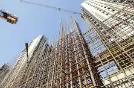
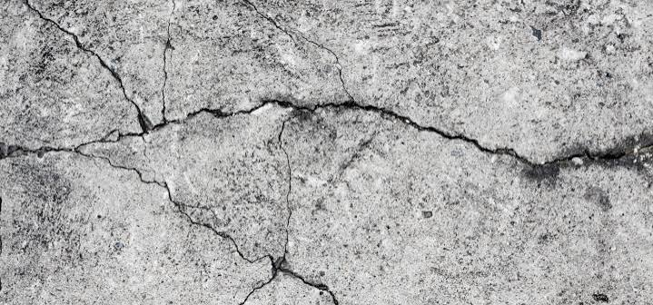
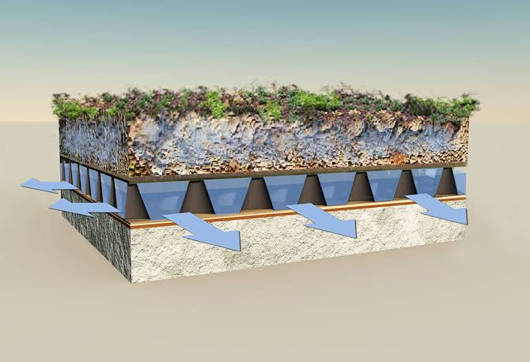
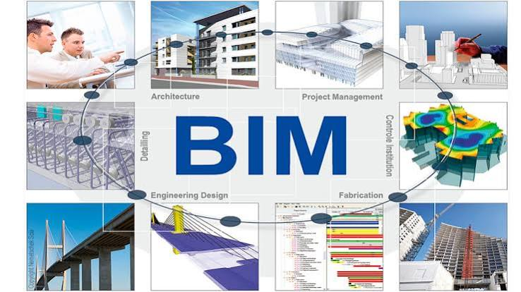

Estructuras Sismorresistentes
Análisis y modelado estructural de edificaciones de gran altura aplicando normativas modernas para garantizar la seguridad sísmica.

Análisis y modelado estructural de edificaciones de gran altura aplicando normativas modernas para garantizar la seguridad sísmica.

Estudio de viabilidad técnica y resistencia de adoquines viales elaborados a partir de residuos sólidos de construcción y demolición.

Diseño de infraestructura hídrica e hidráulica avanzada para mitigar inundaciones pluviales en zonas urbanas de alta densidad.

Modelado de información para la construcción que optimiza la coordinación de especialidades, presupuestos y plazos de ejecución en obra.